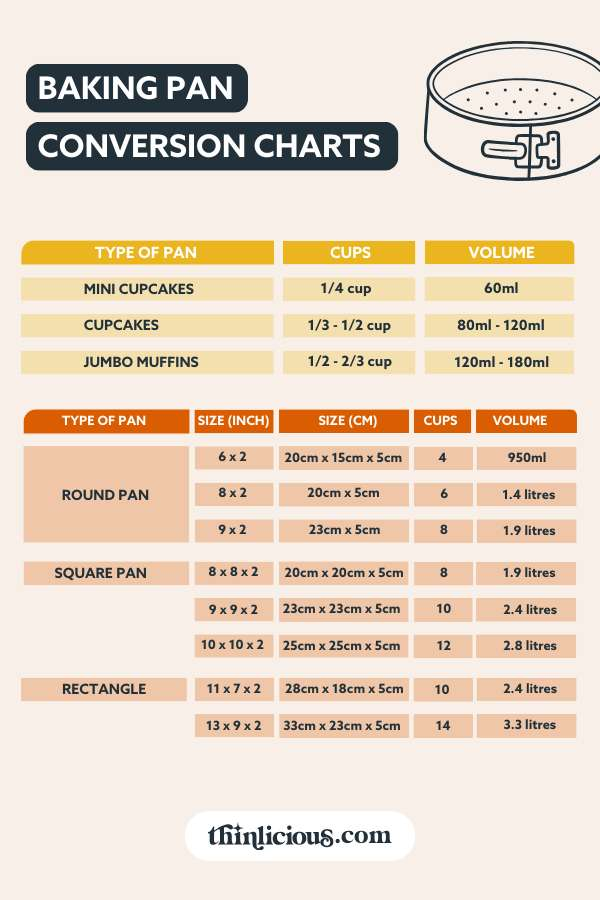

I once owned a very specific pan. It was a 9-inch springform pan that I used for cheesecakes. I loved that pan. Then my brother borrowed it and never gave it back. He says he doesn't remember borrowing it. I say he's a liar. Either way, I had a cheesecake recipe that called for a 9-inch springform, and I didn't have one. I had an 8-inch square, a 10-inch round, and a 9x13. I had no idea which one would work.
That's when I finally sat down and figured out pan substitution math. Not just volume, but area. Not just how much batter fits, but how thick it will be. Not just baking time, but temperature adjustments. It took me a weekend of measuring and calculating, but now I have a system that works for any pan substitution.
Let me start with volume, because that's the most basic. Volume tells you how much batter the pan can hold. You calculate volume by multiplying area times depth. For a round pan, area is pi times radius squared. For a rectangular pan, area is length times width. For a square pan, side times side. Then multiply by the pan's depth.
Here are the volumes for common pans. A 9-inch round pan that is 2 inches deep has about 128 cubic inches. An 8-inch square pan that is 2 inches deep also has about 128 cubic inches. That's why these two pans are interchangeable. Same volume. Same depth. The area is almost identical too, 64 square inches for both. That means the batter will be the same thickness and the baking time will be the same.
A 9x13 rectangular pan that is 2 inches deep has 234 cubic inches. That's almost twice the volume of a 9-inch round. If you pour a 9-inch round batter into a 9x13 pan, the batter will be half as thick. It will bake faster and might burn. If you pour a 9x13 batter into a 9-inch round pan, it will overflow. You need to adjust the recipe.
When you substitute a pan, you have three options. One, find a pan with the same volume. Two, adjust the recipe to match the new pan's volume. Three, adjust the pan to match the recipe by using multiple pans.
Option one is the easiest. You look at my volume chart and find a pan with the same or similar volume. A 9-inch round and an 8-inch square are a match. A 10-inch round has 158 cubic inches, which is close to a 9-inch square which has 162. Those are close enough. A 9x13 has 234, which is close to a 12-inch round which has 226. Those are also close enough.
Option two is to scale your recipe to fit the new pan. You calculate the volume of the original pan and the volume of the substitute pan. Divide the substitute volume by the original volume. That's your pan adjustment factor. Multiply all your ingredient amounts by that factor. If you're going from a 128 cubic inch pan to a 234 cubic inch pan, your factor is 1.83. Make 1.83 times the recipe. That will fill the new pan to the same depth as the original.
Option three is to use multiple pans. You have a recipe that fills one 9x13 pan. You only have 8-inch square pans. One 8-inch square holds 128 cubic inches. A 9x13 holds 234. You need about 1.8 of the 8-inch pans. That means two pans. They'll be slightly less full than the original, but that's fine. Just watch the baking time.
Baking time is the tricky part. When you change pans, the baking time changes. A wider pan means thinner batter, which means faster baking. A deeper pan means thicker batter, which means slower baking. Here are my rules of thumb. If you keep the same area but increase depth by 50%, increase baking time by 20-30%. If you keep the same depth but increase area by 50%, decrease baking time by 10-15%. If you increase both area and depth, do both adjustments.
I always start with the original baking time and then check early. For a shallower batter, I check at 75% of the original time. For a deeper batter, I check at 125% of the original time. Then I adjust from there. Visual cues are more reliable than timers. A toothpick inserted in the center should come out clean. The edges should pull away from the pan. The top should spring back when touched.
Let me give you a real example. A cake recipe bakes in a 9-inch round pan for 30 minutes at 350 degrees. You want to use a 9x13 pan instead. The 9x13 has almost twice the area. The batter will be half as thick. You should check the cake at 20 minutes. It will probably be done around 22-24 minutes. Lower the temperature to 325 if the edges are browning too fast.
Another example. A brownie recipe bakes in an 8-inch square pan for 25 minutes. You want to use a 10-inch round pan. The 10-inch round has about 23% more area. The batter will be slightly thinner. Check at 20 minutes. It will likely be done at 22 minutes.
Here's a table of common pan volumes that I have memorized. Round 6x2 inches, 56 cubic inches. Round 8x2, 100. Round 9x2, 128. Round 10x2, 158. Round 12x2, 226. Square 8x8x2, 128. Square 9x9x2, 162. Square 10x10x2, 200. Rectangular 9x13x2, 234. Rectangular 8x8x2, 128. Loaf 8x4x3, about 84. Loaf 9x5x3, about 122. Bundt pan, about 300. Springform 9x2.5, about 160.
I keep this table on a card taped inside my cabinet. When I need to substitute a pan, I look at the card. If I don't have a pan with matching volume, I decide whether to adjust the recipe or use multiple pans.
One thing that surprises people is that loaf pans are tricky. Their volume depends on the shape. A standard 8x4 loaf pan has sloped sides, so the volume is less than length times width times height. I measured mine by filling it with water. It held 6 cups. One cup is 14.4 cubic inches, so 6 times 14.4 is about 86 cubic inches. That's close enough to 84. If you're substituting a loaf pan, measure the water capacity first.
Another thing that surprises people is that bundt pans are not all the same. Some hold 10 cups. Some hold 12. Some hold 15. If a recipe calls for a bundt pan and you don't have one, you can use a 10-inch tube pan or a 9x13. But you need to know the volume. I recommend measuring your bundt pan with water before you use it for a scaled recipe.
The material of the pan also matters. Glass pans insulate. Metal pans conduct heat. Dark metal pans absorb more heat and brown faster. When you substitute a pan, consider the material. If you're switching from light metal to dark metal, reduce the oven temperature by 25 degrees. If you're switching from metal to glass, increase the temperature by 25 degrees or bake longer.
I learned this when I made a pie in a glass dish instead of metal. The crust was soggy on the bottom because glass doesn't conduct heat as well. The next time, I increased the oven temperature by 25 degrees and baked on the bottom rack. The crust was perfect.
The same applies to scaling. If you're scaling a recipe and using a different pan material, adjust the temperature. Don't just assume the recipe's temperature is right for your pan.
I built a tool that handles all of this math for you.
If you're ever in doubt, use a pan that's a little too big rather than a little too small. An underfilled pan is fine. The batter will just be thinner and bake faster. An overfilled pan will overflow and make a mess. When in doubt, go bigger.
My brother still has my 9-inch springform pan. He denies it. I've accepted that I'll never get it back. But I've learned to substitute pans so well that I don't need it anymore. I can make a cheesecake in an 8-inch square or a 10-inch round or even a 9x13. The texture changes slightly, but the taste is the same.
That's the goal of pan substitution. Not perfection. Just good enough.
— Olivia
P.S. I bought a new 9-inch springform pan last year. It's nicer than my old one. My brother asked to borrow it. I said no.